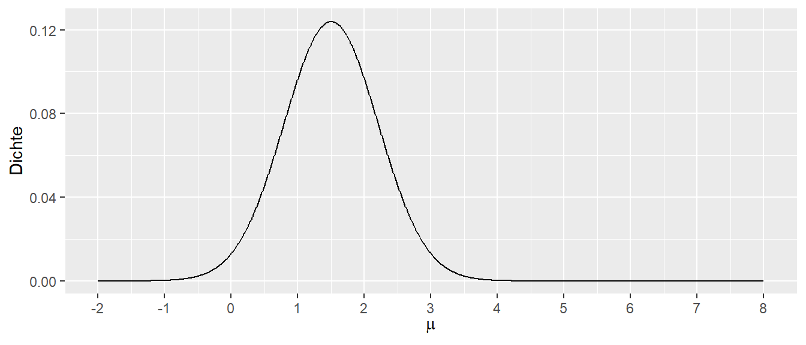

14 Inferenz
Nachdem wir im vorhergehenden Kapitel gelernt haben, wie wir eine Regressionsgerade an einen Datensatz fitten, stellt sich nun die Frage, ob die Regressionsgerade tatsächlich einen relevanten Zusammenhang zwischen den beiden Variablen \(X\) und \(Y\) beschreibt.
Da das einfache lineare Modell zwei Parameter \(\beta_0\) und \(\beta_1\) (siehe Formel \(\eqref{eq-slm-psform-beta}\)) beinhaltet, kann diese Fragestellung auf beide Koeffizienten angewendet werden. D.h., wir können uns fragen, ob das Modell einen statistisch signifikanten Zusammenhang zwischen den beiden Variablen beschreibt. Bezogen auf die beiden Parameter: Ist der Parameter \(\hat{\beta}_0\) statistisch signifikant, und ist der Parameter \(\hat{\beta}_1\) statistisch signifikant? Um unseren Werkzeugsatz zur statistischen Signifikanz anwenden zu können, brauchen wir aber erst einmal wieder eine Verteilung, bei der wir kritische Bereiche identifizieren können, um zu entscheiden, ob eine beobachtete Statistik statistisch signifikant ist. Wir behalten dabei immer im Hinterkopf, dass statistische Signifikanz nicht das Gleiche ist wie praktische Relevanz bzw. der Beweis einer Abweichung von einer gegebenen statistischen Hypothese.
14.1 Statistische Überprüfung von \(\beta_1\) und \(\beta_0\)
Der erste Schritt, um eine Referenzverteilung zu erhalten, besteht zunächst darin, dass wir eine Zufallsvariable benötigen. Bisher haben wir den Zusammenhang zwischen Variablen über die Formel
\[ y_i = \beta_0 + \beta_1 \cdot x_i \]
beschrieben. In dieser Form ist allerdings noch gar kein zufälliges Element vorhanden. Für ein gegebenes \(x_i\) bekommen wir genau ein spezifiziertes \(y_i\). Allerdings hatten wir schon bei der Herleitung gesehen, dass reale Daten in den seltensten Fällen genau auf der Gerade liegen, sondern wir die Parameter \(\hat{\beta}_0\) und \(\hat{\beta}_1\) so gewählt haben, dass die quadrierten Abweichungen, die Residuen \(\epsilon_i\), minimal werden. Diese Residuen verwenden wir nun, um ein zufälliges Element in unsere Regression zu integrieren. Dazu müssen wir den Residuen \(\epsilon_i\) eine Verteilung zuweisen. Wir hatten im Rahmen der vorhergehenden Herleitung zur statistischen Signifikanz auch schon verschiedene theoretische Verteilungen kennengelernt. In diesem Zusammenhang hat sich die Normalverteilung als besonders praktisch erwiesen bzw. als eine Verteilung, die in verschiedenen Anwendungen eine passable Näherung an reale Daten liefert. Daher gehen wir im Folgenden davon aus, dass die Residuen \(\epsilon_i\) einer Normalverteilung folgen. Intuitiv hatten wir bei der Herleitung der Geradengleichung mittels der Methode der kleinsten Quadrate gesehen, dass die Abweichungen in etwa, in Abhängigkeit von der absoluten Abweichung, gleichmäßig oberhalb und unterhalb der Geraden verteilt waren.
Im behandelten Weitsprungbeispiel hatten wir informell hergeleitet, dass die Weitsprungleistung von unzähligen Faktoren beeinflusst werden kann, welche dazu führen, dass für eine gegebene Anlaufgeschwindigkeit nicht immer die gleiche Weitsprungweite erzielt wird. Generell ist diese Art der Begründung bei biologischen Systemen meistens plausibel. Im vorhergehenden Abschnitt haben wir dazu aber auch noch gesehen, dass die Normalverteilung gut geeignet ist, um Prozesse zu modellieren, bei denen viele kleine additive Effekte auftreten. Dieser Argumentation folgend ist es also durchaus plausibel, diese Einflüsse auch bei der Regression mittels einer Normalverteilung zu modellieren.
Insgesamt erlaubt uns diese Annahme, wie folgt mathematisch zu formulieren:
\[\begin{equation} \epsilon_i \sim \mathcal{N}(0, \sigma^2) \label{eq-slm-inf-epsilon-norm} \end{equation}\]
In Formel \(\eqref{eq-slm-inf-epsilon-norm}\) drücken wir aus, dass die Residuen \(\epsilon_i\), also die Abweichungen vom vorhergesagten Wert \(\hat{y}_i\) zum beobachteten Wert \(y_i\), einer Normalverteilung mit einem Mittelwert von \(\mu = 0\) und einer noch näher zu spezifizierenden Varianz \(\sigma^2\) folgen. Der Mittelwert \(\mu = 0\) drückt dabei unsere Erwartung aus, dass sich im Mittel die Abweichungen von der Geraden nach oben und nach unten gegenseitig aufheben. Der Skalenparameter \(\sigma^2\) drückt dabei die Streuung der Werte um die Gerade aus. D.h., wenn \(\sigma^2\) größer wird, dann streuen die Werte stärker um die Gerade, und entsprechend entgegengesetzt, wenn \(\sigma^2\) kleiner ist.
Insgesamt führt dies zu der folgenden Formulierung des einfachen Regressionsmodells:
\[\begin{equation} Y_i = \beta_0 + \beta_1 \cdot x_i + \epsilon_i, \quad \epsilon_i \sim \mathcal{N}(0, \sigma^2) \label{eq-slm-inf-simple-reg} \end{equation}\]
Bezüglich der Residuen \(\epsilon_i\) lässt sich noch eine weitere Spezifikation machen, auf die wir später noch öfter zurückgreifen werden. Bisher sind wir davon ausgegangen, dass die einzelnen Datenpunkte unabhängig voneinander sind. D.h., jeder einzelne Wert wird nicht durch einen der anderen Werte beeinflusst. In unserem Beispiel waren die Anlaufgeschwindigkeits-Sprungweiten-Paare jeweils von unterschiedlichen Athleten. In diesem Fall sind die Kovarianzen zwischen den Residuen \(= 0\), formal \(cov(e_i, e_j) = 0,~für~i \neq j\). Daher lassen sich die Varianzen und Kovarianzen von \(\epsilon_i\) in Form einer sogenannten Varianz-Kovarianz-Matrix schreiben. Matrizen hatten wir schon in der Einführung zu R kennengelernt. Die Varianz-Kovarianz-Matrix bekommt per Konvention das Zeichen \(\Sigma\), und \(\mathbf{I}_n\) bezeichnet die Einheitsmatrix.
\[\begin{equation*} \Sigma = \begin{pmatrix} \sigma^2 & 0 & \cdots & 0 \\ 0 & \sigma^2 & & \vdots \\ \vdots & & \ddots & \\ 0 & \cdots & & \sigma^2 \end{pmatrix} = \sigma^2 \begin{pmatrix} 1 & 0 & \cdots & 0 \\ 0 & 1 & & \vdots \\ \vdots & & \ddots & \\ 0 & \cdots & & 1 \end{pmatrix} = \sigma^2 \mathbf{I}_n \end{equation*}\]
Die Annahmen des Modells, dass ein linearer Zusammenhang zwischen \(Y\) und \(X\) besteht, die einzelnen \(N\) Datenpunkte unabhängig voneinander sind und die Residuen einer multivariaten Normalverteilung mit \(\epsilon \sim \mathcal{N}(0, \sigma^2 \mathbf{I}_n)\) folgen, werden als Gauss-Markov-Modell bezeichnet.
Definition 14.1 (Gauss-Markov-Modell) Besteht zwischen \(N\) unabhängigen Datenpunkten \((y_i, x_i)\) ein linearer Zusammenhang der Form \(Y = \beta_0 + \beta_1 \cdot X + \epsilon\) zwischen den Variablen \(X\) und \(Y\), und sind die Datenpunkte voneinander unabhängig sowie die \(\epsilon\) folgen einer multivariaten Normalverteilung \(\epsilon \sim \mathcal{N}(0, \sigma^2 \mathbf{I}_n)\), dann wird dieses Modell als Gauss-Markov-Modell bezeichnet.
\(Y\) wird jetzt großgeschrieben, da es sich um eine Zufallsvariable handelt. Unter einer multivariaten Normalverteilung können wir uns eine Verallgemeinerung der uns bekannten Normalverteilung vorstellen. Beispielsweise hat eine zweidimensionale Normalverteilung die Form eines Zuckerhuts. Dieser Teil ist für unsere weitere Betrachtung aber zunächst nicht von Interesse. Unsere Formulierung des Regressionsmodells nach Formel \(\eqref{eq-slm-inf-simple-reg}\) führt nun dazu, dass wir das Regressionsmodell in zwei Teile unterscheiden können: einen deterministischen Teil \(\beta_0 + \beta_1 \cdot x\) und einen stochastischen Teil \(\epsilon_i\). Da \(Y_i\) durch die Addition der beiden Teile berechnet wird, führt dies dazu, dass \(Y_i\) ebenfalls stochastisch ist und somit zu einer Zufallsvariable wird.
Schauen wir uns weiter an, wie sich \(Y_i\) verhält, wenn wir \(X_i\) als Konstante \(X\) mit einem bestimmten Wert annehmen. Dann wird aus Formel \(\eqref{eq-slm-inf-simple-reg}\) \(Y_i = \beta_0 + \beta_1 \cdot x + \epsilon_i\). Folglich bleibt der deterministische Teil immer gleich und wird zu einer Konstante. Da \(\epsilon_i\) normalverteilt ist, ist \(Y_i\) ebenfalls normalverteilt. Der Mittelwert der Normalverteilung von \(Y_i\), \(\mu_{Y_i}\), ist allerdings nicht gleich null, sondern die Normalverteilung von \(\epsilon_i\) wird um die Konstante \(\beta_0 + \beta_1 \cdot x\) verschoben (siehe Abbildung 14.1). Das führt dazu, dass \(Y_i\) der Verteilung \(\mathcal{N}(\beta_0 + \beta_1 x)\) folgt.

Daraus folgt zusätzlich, dass für jedes gegebenes \(X\) die \(Y\)-Werte einer Normalverteilung folgen. Lediglich die Verschiebung des Mittelwert der jeweiligen \(Y\)-Normalverteilung hängt von \(X\) über die Formel \(\beta_0 + \beta_1 \cdot X\) zusammen. Formal:
\[ Y|X \sim N(\beta_0+ \beta_1 X,\sigma^2) \]
Die Schreibweise \(|X\) wird übersetzt mit “für gegebenes \(X\)” und sagt aus, dass die Verteilung von \(Y\) von \(X\) abhängt. Es handelt sich dabei um eine bedingte Wahrscheinlichkeit. Die Varianz der jeweiligen \(Y\)-Werte ist dabei die zuvor angenommene Varianz der \(\epsilon_i\), also \(\sigma^2\). Eine wichtige Annahme, die noch einmal betont werden sollte: Wir gehen davon aus, dass die einzelnen Punkte unabhängig voneinander sind. Im Weitsprungbeispiel würde dies bedeuten, dass jeder Sprung von einem anderen Athleten kommen muss.
Wenn wir die Verteilungen von \(Y\) graphisch für beispielsweise drei verschiedene \(X\)-Werte darstellen, dann ergibt sich die folgende Abbildung (siehe Abbildung 14.2). D.h., für jeden \(X\)-Wert werden mehrere \(Y\)-Werte beobachtet, die jeweils einer Normalverteilung folgen.
In Abbildung 14.2 ist klar zu sehen, wie für jeden der drei Punkte von \(X\) die beobachteten \(Y\)-Werte einer Normalverteilung folgen. Die Streuung der Verteilung ist an jedem der \(X\)-Punkte gleich, nämlich \(=\sigma^2\). Dagegen ist der Mittelwert der Verteilung der \(Y_i\)-Werte der Gleichung \(\beta_0 + \beta_1 X\) folgend entlang der Regressionsgerade verschoben. Dies erklärt, warum die Verteilung von \(Y\) vom \(X\)-Wert abhängt. Die Verteilung von \(Y\) ist im Gauss-Markov-Modell immer normalverteilt mit einer konstanten Varianz \(\sigma^2\). Der Mittelwert \(\mu\) der Verteilung hängt jedoch vom \(X\)-Wert ab und verändert sich entsprechend \(\beta_0 + \beta_1 X\).
Wenn wir uns an die Ausführungen zur statistischen Signifikanz erinnern, dann haben wir in diesem Zusammenhang von einem datengenerierenden Prozess (Definition 9.1) (DGP) gesprochen. In unserem jetzigen Modell können wir dementsprechend zwei Komponenten als Teile des DGP identifizieren. Entsprechend Formel \(\eqref{eq-slm-inf-simple-reg}\) besteht der DGP aus dem deterministischen Teil \(\beta_0 + \beta_1 X\) und dem stochastischen Teil \(\epsilon_i \sim \mathcal{N}(0,\sigma^2)\). Diese Einsicht können wir verwenden, um die Eigenschaften dieses Modells für mögliche Aussagen hinsichtlich statistischer Signifikanz zu untersuchen.
Wir fokussieren uns jetzt auf ein vereinfachtes Modell, bei dem wir \(\beta_0 = 0\) setzen. D.h., der \(y\)-Achsenabschnitt der Regressionsgeraden ist \(=0\), und wir betrachten erst einmal nur die Eigenschaften von \(\beta_1\). Gehen wir nun davon aus, dass zwischen \(X\) und \(Y\) der Zusammenhang \(\beta_1 = 1\) besteht. D.h., der Steigungskoeffizient hat den Wert \(=1\), was dazu führt, dass, wenn \(X\) um eine Einheit vergrößert wird, sich \(Y\) ebenfalls um eine Einheit vergrößert. Die Gerade würde somit genau die 1. Winkelhalbierende beschreiben. Formal erhalten wir:
\[\begin{equation} Y = 0 + 1 \cdot X + \epsilon, \quad \epsilon \sim \mathcal{N}(0,\sigma^2) \label{eq-slm-inf-sim-mod-1} \end{equation}\]
Jetzt müssen wir allerdings noch einen Wert für \(\sigma^2\) bzw. \(\sigma\) festlegen. Sei dieser der Einfachheit halber \(\sigma = \frac{1}{2}\). Jetzt können wir R benutzen, um Experimente, also Beobachtungen, anhand dieses DGP zu simulieren. Der Überschaubarkeit halber besteht unser Datensatz nur aus \(N = 12\) Punkten, die sich auf drei \(X\)-Werte verteilen, z.B. \(X \in \{-1, 0, 1\}\). Somit generieren wir für jeden \(X\)-Wert vier unterschiedliche \(Y\)-Werte. In R-Code übertragen könnten wir das folgende Programm erstellen.
N <- 12
beta_0 <- 0
beta_1 <- 1
sigma <- 1/2
dat_sim_1 <- tibble(
x_i = rep(-1:1, each=4),
y_i = beta_0 + beta_1 * x_i + rnorm(N, mean = 0, sd = sigma)
)Wenn wir uns die generierten Daten anschauen, dann sehen wir wenig überraschend \(12\) verschiedene Werte für \(y_i\) und jeweils \(3 \times 4\) verschiedene Werte für \(x_i\) (siehe Tabelle 14.1).
| i | x_i | y_i |
|---|---|---|
| 1 | -1 | -0.78 |
| 2 | -1 | -1.03 |
| 3 | -1 | -1.15 |
| 4 | -1 | -0.50 |
| 5 | 0 | -0.32 |
| 6 | 0 | -0.44 |
| 7 | 0 | -0.39 |
| 8 | 0 | 1.31 |
| 9 | 1 | 1.04 |
| 10 | 1 | 1.41 |
| 11 | 1 | 0.36 |
| 12 | 1 | 1.27 |
Graphisch dargestellt erhalten wir (Abbildung 14.3):
ggplot(dat_sim_1, aes(x_i, y_i)) +
geom_point()
Ebenfalls wenig überraschend, die Punkte sind auf den \(x\)-Werten \(-1, 0\) und \(1\) zentriert und liegen nicht alle aufeinander, da sie einer Zufallsstichprobe aus \(\mathcal{N}(0, \frac{1}{4})\) entspringen.
Für die Daten können die Normalengleichungen angewendet um Werte für \(\hat{\beta}_0\) und \(\hat{\beta}_1\) zu erhalten. In R liefert die Funktion lm() die entsprechenden Werte.
mod_sim_1 <- lm(y_i ~ x_i, dat_sim_1)
coef(mod_sim_1)(Intercept) x_i
0.06490682 0.94275573 Es ist zu beobachten, dass die berechneten Werte für \(\beta_0\) und \(\beta_1\) in der Nähe der wahren Werte liegen (siehe Formel \(\eqref{eq-slm-inf-sim-mod-1}\)). Die Werte entsprechen auf Grund der Stichprobenvariabilität nicht exakt den wahren Werten, da in der Simulation die Funktion rnorm() verwendet wurde. Nun kann die Frage gestellt werden: Was passiert, wenn die Simulation ein weiteres Mal durchgefüht wird?
dat_sim_2 <- tibble(
x_i = rep(-1:1, each=4),
y_i = beta_0 + beta_1 * x_i + rnorm(N, mean = 0, sd = sigma)
)
mod_sim_2 <- lm(y_i ~ x_i, dat_sim_2)
coef(mod_sim_2)(Intercept) x_i
0.05568189 1.02615736 Es wird wenig überraschend ein neuer Satz von \(\hat{\beta_0}\) und \(\hat{\beta_1}\) erhalten. Jedes Mal wenn rnom() aufgerufen wird, wird eine neue Ziehung aus der Normalverteilung generiert. Somit werden neue Werte für \(y_i\) erzeugt und dementsprechend andere Werte für \(\hat{\beta}_0\) und \(\hat{\beta}_1\). Stichword: Stichprobenvariabilität. Um eine tatsächliche Verteilung zu erhalten, Wird die Simulation nun beispielsweise \(1000\times\) durchgeführt.
N_sim <- 1000
beta_1_s <- numeric(N_sim)
x_i <- rep(-1:1, each=4)
for (i in 1:N_sim) {
daten_temporaer <- tibble(x_i,
y_i = beta_0 + beta_1 * x_i + rnorm(N, mean = 0, sd = sigma))
model_temporaer <- lm(y_i ~ x_i, daten_temporaer)
beta_1_s[i] <- coef(model_temporaer)[2]
}Es wird nun ein Vektor beta_1_s mit \(1000\) beobachteten \(\hat{\beta}_1\) berechnet. Mit diesen Werten kann nun ein Histogramm der \(\hat{\beta}_1\)s erstellt werden, um die Verteilung zu betrachten (Abbildung 14.4).
hist(beta_1_s, xlab = expression(hat(beta)[1]), main='')
abline(v = beta_1, col='red', lty=2)In Abbildung 14.4 begegnet uns zunächst wieder unsere altbekannte Glockenkurve. Was uns positiv stimmen sollte, ist, dass der Mittelwert der Verteilung im Bereich des wahren Werts von \(\beta_1\) (rote Linie) liegt und Werte mit größer werdender Abweichung vom wahren Wert in ihrer Häufigkeit abnehmen. Die Häufigkeit ist jedoch nicht null, sondern lediglich geringer. Werte in der Nähe von \(\beta_1\) weisen dagegen eine größere Häufigkeit auf. Dies zeigt, dass wir in der Lage sind, mit unserem Regressionsmodell im Mittel tatsächlich den wahren Wert \(\beta_1\) abzuschätzen. Allerdings, wie immer: Bei einer einzelnen Durchführung des Experiments können wir alles von perfekt spot-on bis komplett danebenliegen und würden es nicht wissen. Die Standardabweichung der \(\hat{\beta}_1\) beschreibt dabei wieder den Standardfehler der Stichprobenverteilung.
Wir können jetzt aber auch wieder, ganz parallel zu unseren Herleitungen in der kleinen Welt, einen Entscheidungsprozess spezifizieren. Wenn Abbildung 14.4 den DGP beschreibt und dies die Verteilung der zu erwartenden \(\hat{\beta}_1\) unter dem Modell ist, dann würden wir bei der Durchführung eines neuen Experiments sagen: Wenn unser beobachteter Wert in den Rändern der Verteilung von Abbildung 14.4 liegt, gehen wir eher nicht davon aus, dass unser neues Experiment dem gleichen DGP zugrunde liegt. D.h., wir definieren uns Grenzen (kritische Werte) am oberen und unteren Rand der Verteilung. Wenn ein beobachteter Wert entweder unterhalb der unteren Grenze oder oberhalb der oberen Grenze liegt, interpretieren wir dies im Sinne von: Wir sind jetzt aber sehr überrascht, diesen Wert zu sehen, wenn er dem gleichen datengenerierenden Prozess entstammen soll. Daher glauben wir nicht, dass dieses Experiment den gleichen DGP besitzt.
Um diese Entscheidung treffen zu können, müssen wir also Grenzen definieren. Dazu können wir zunächst einfach die Quantile der Verteilung nehmen und z.B. unten \(2.5\%\) und oben \(2.5\%\) abschneiden. So kommen wir dann insgesamt auf \(5\%\), um auf die übliche Irrtumswahrscheinlichkeit von \(\alpha = 0.05\) zu kommen. Dazu benutzen wir in R die quantile()-Funktion1:
crit_vals <- round(quantile(beta_1_s, probs = c(0.025, 0.975)), 2)
crit_vals 2.5% 97.5%
0.65 1.35 Mittels dieser Werte können wir zwei disjunkte Wertemengen definieren: einmal die Werte innerhalb von \(\hat{\beta}_1 \in [0.65,1.35]\), bei denen wir nicht überrascht sind und die unter der Annahme \(\beta_1 = 1\) erwartbar sind, und die Werte \(\hat{\beta}_1 \notin [0.65,1.35]\), diejenigen Werte, die uns unter der Annahme überraschen würden. Ins Histogramm übertragen (siehe Abbildung 14.5).

Führen wir nun ein Experiment einmal durch. Wir beobachten einen Wert für \(\hat{\beta}_1\) von \(1.46\). Dieser Wert liegt außerhalb unseres definierten Intervalls \([0.65, 1.35]\), daher sehen wir diesen Wert als derart unwahrscheinlich unter dem angenommenen DGP, das wir sagen: Wir glauben nicht, dass diesem Experiment der angenommene DGP zugrunde liegt. Graphisch führt dies zu Abbildung 14.6.
Daher würden wir diesen Wert als statisisch signifikant bezeichnen und würden unsere Annahme ablehnen.
14.2 Teststatistik für \(\beta_1\)
Jetzt sind wir aber etwas hin und her gesprungen zwischen Simulation, Experiment, Annahmen und Schlussfolgerungen. Normalerweise kennen wir die Stichprobenverteilung vor dem Experiment nicht, sondern wir sind an dem Wert \(\beta_1\) interessiert. Wenn wir den Wert schon wüssten, müssten wir ja gar kein Experiment mehr durchführen. D.h., wir haben eigentlich noch keine klaren Vorkenntnisse. Mit welcher Annahme gehen wir dann in das Experiment hinein? Nun, wie schon beim kleinen Welt-Beispiel, starten wir mit der Annahme, dass zwischen den beiden Variablen \(X\) und \(Y\) kein Zusammenhang besteht. Übertragen auf den Modellparameter \(\beta_1\) bedeutet dies, dass kein linearer Zusammenhang zwischen den beiden Variablen existiert. D.h., Informationen über \(X\) geben uns keine Informationen über \(Y\). Formal:
\[\begin{align*} H_0: \beta_1 &= 0 \\ H_1: \beta_1 &\neq 0 \end{align*}\]
Um die Stichprobenverteilung unter der \(H_0\) formal herleiten zu können, sind der Erwartungswert von \(\hat{\beta}_1\) und dessen Standardfehler notwendig. Es lässt sich zeigen, dass die folgenden Zusammenhänge unter den gesetzten Annahmen bestehen:
\[\begin{equation} E[\hat{\beta}_1] = \beta_1 \end{equation}\]
Der Schätzer \(\hat{\beta}_1\) aus den Normalengleichungen von \(\beta_1\) ist erwartungstreu (unbiased). Der Standardfehler des Schätzers lässt sich wie folgt bestimmen:
\[\begin{equation} \sigma_{\beta_1} = \sqrt{\frac{\sigma^2}{\sum{(X_i - \bar{X})^2}}} \label{eq-slm-beta1-se} \end{equation}\]
Hier taucht jetzt zum ersten Mal der Parameter \(\sigma^2\) formal auf. Wo kommt diese Varianz her? Sie gehört zu unserer Annahme der Verteilung der \(\epsilon_i \sim \mathcal{N}(0,\sigma^2)\). Bisher haben wir aber noch keine Möglichkeit kennengelernt, diese abzuschätzen.
Nach etwas motiviertem Starren auf die verschiedenen Formeln könnte es heuristisch plausibel sein, dass die Varianz, also die Streuung der \(\epsilon_i\), mit der Streuung unserer Werte um die Regressionsgerade zusammenhängt. Formal hatten wir diese als Residuen bezeichnet und mit \(e_i = \hat{y}_i - y_i\) bezeichnet. Zuvor hatten wir diese Abweichungen als Fehler bezeichnet, aber unter den jetzt eingeführten Annahmen handelt es sich nicht wirklich um Fehler. Stattdessen sind die Abweichungen eine Folge davon, dass \(Y_i\) für jeden Wert von \(X_i\) nicht nur einen einzigen Wert hat, sondern einer Verteilung folgt: \(Y_i|X_i \sim \mathcal{N}(\beta_0 + \beta_1 X, \sigma^2)\), deren Form durch die \(\epsilon_i\) bestimmt wird.
Die \(e_i\) sind tatsächlich die Schätzer für die wahren \(\epsilon_i\), also \(e_i = \hat{\epsilon}_i = \hat{y}_i - y_i\). Es lässt sich nun zeigen, dass mittels dieser \(e_i\) ein erwartungstreuer Schätzer für \(\sigma^2\) erzeugt werden kann, nämlich die mittleren quadrierten Abweichungen (MSE = mean squared error):
\[\begin{equation} \hat{\sigma}^2 = \frac{\sum_{i=1}^N e_i^2}{N-2} = \frac{\text{SSE}}{N-2} = \text{MSE} \label{eq-slm-sigma} \end{equation}\]
Da das später immer wieder auftauchen wird, hier auch noch einmal in die zwei Komponenten zerlegt: Der Zähler wird als Summe der quadrierten Abweichungen (SSE = sum of squared errors) bezeichnet und durch den Term \(N-2\), der als Freiheitsgrade bezeichnet wird, geteilt. Damit die Formel und deren Bezeichnung mittlere Abweichung zusammenpassen, wäre es schöner, wenn die Summe durch die Anzahl \(N\) der Terme geteilt würde. Allerdings verhält sich das in diesem Fall ähnlich wie bei der Varianz einer Stichprobe, wo die Summe ebenfalls durch \(N-1\) geteilt wird (zur Erinnerung \(s^2 = \frac{\sum_{i=1}^N (x_i - \bar{x})^2}{N-1}\)). Für die MSE wird dementsprechend nicht durch \(N-1\), sondern durch \(N-2\) geteilt.
Für unser Problem der Stichprobenverteilung ist jetzt aber wichtiger, dass wir mittels Formel \(\eqref{eq-slm-sigma}\) den Standardfehler von \(\hat{\beta}_1\) bestimmen können, indem wir für \(\sigma^2\) das mittels der Daten ermittelte \(\hat{\sigma}^2\) einsetzen:
\[\begin{equation} \hat{\sigma}_{\beta_1} = \sqrt{\frac{\hat{\sigma}^2}{\sum{(X_i - \bar{X})^2}}} \label{eq-slm-hatbeta1-se} \end{equation}\]
Dies erlaubt uns jetzt, nach unserem bereits bekannten Muster, eine Teststatistik für die \(H_0\) herzuleiten:
\[ t = \frac{\hat{\beta}_1 - \beta_{1,H_0}}{\hat{\sigma}_{\beta_1}} \]
Wir teilen die Abweichung des beobachteten Steigungskoeffizienten \(\hat{\beta}_1\) von einem angenommenen Steigungskoeffizienten \(\beta_{1,H_0}\) durch den Standardfehler von \(\hat{\beta}_1\). Unter der \(H_0\) mit der Annahme \(\beta_1 = 0\) wird daraus die folgende Teststatistik:
\[\begin{equation} t = \frac{\hat{\beta}_1}{\hat{\sigma}_{\beta_1}} \label{eq-slm-beta1-statistic} \end{equation}\]
Die Referenzverteilung dieser Teststatistik folgt unter der \(H_0: \beta_1 = 0\) einer \(t\)-Verteilung mit \(N-2\) Freiheitsgraden. Formal:
\[\begin{equation*} t = \frac{\hat{\beta}_1 - \beta_{1,H_0}}{\hat{\sigma}_{\beta_1}} \sim t_{df = N-2} \end{equation*}\]
Da diese Formel wieder etwas aus der Luft gegriffen erscheint, folgt hier noch einmal eine Simulation unter der \(H_0: \beta_1 = 0\). Wir nehmen \(n = 45\) Datenpunkte und generieren zunächst \(x\)-Werte, die wir immer wieder verwenden. Anschließend ziehen wir für die \(y\)-Werte normalverteilte Werte aus der Normalverteilung \(\mathcal{N}(\mu = 0, \sigma^2 = 1)\). Konzeptionell bedeutet dies, dass kein Zusammenhang zwischen den \(x\)- und den \(y\)-Werten besteht, also die \(H_0: \beta_1 = 0\) tatsächlich wahr ist. Der DGP ist also einfach eine Zufallszahlenziehung von \(y\)-Werten ohne jeglichen Zusammenhang mit den \(x\)-Werten.
Wir können diesen DGP jetzt für eine Simulation benutzen und \(1000\)-mal durchlaufen lassen. Für jeden Durchgang berechnen wir ein Regressionsmodell zwischen den \(x\)- und \(y\)-Werten und extrahieren den Steigungskoeffizienten \(\hat{\beta}_1\) mittels coef() und die Residualvarianz \(\hat{\sigma}^2\) mittels sigma(). Wir erhalten mittels replicate() eine Matrix mit \(1000\) \(\hat{\beta}_1\) (1. Zeile) und \(1000\) \(\hat{\sigma}\)-Werten (2. Zeile). (Tipp: Kopiert den Code-Chunk, um das Programm auf eurem Rechner auszuführen).
N <- 45
n_sim <- 1000
x <- runif(N, -1, 1)
sigma <- 1
experiment <- function() {
y <- rnorm(N, mean = 0, sd = sigma)
mod <- lm(y~x)
b <- coef(mod)[2]
c(beta_1 = coef(mod)[2],
sigma = sigma(mod))
}
set.seed(123)
mod_ergebnisse <- t(replicate(n_sim, experiment()))Mit diesen Information können wir nun den Standarfehler \(\sigma[\hat{\beta}_1]\) und die \(t\)-Werte berechnen.
betas <- tibble(beta_1 = mod_ergebnisse[,1],
sigma = mod_ergebnisse[,2]) |>
mutate(
s_e_beta_1 = sqrt(sigma**2/sum( (x - mean(x))**2)),
t = beta_1 / s_e_beta_1)Nun, können wir ein Histogramm der berechneten \(t\)-Werte erstellen und auch gleich noch dazu die theoretische \(t\)-Verteilung einzeichnen.
t_theoretical <- tibble(
t = seq(-3, 3, length.out = 150),
p = dt(t, N - 2)
)
ggplot(betas, aes(t)) +
geom_histogram(aes(y = after_stat(density)), bins = 20) +
geom_line(data = t_theoretical, aes(t, p), color = 'red') +
labs(x = "t", y = 'Relative Häufigkeit') 
In Abbildung 14.7 können wir sehen, dass die theoretische \(t\)-Verteilung mit \(df = N - 2\) Freiheitsgraden (in rot) die beobachtete Verteilung der \(t\)-Werte sehr gut abschätzt. D.h. wir können die theoretische Verteilung benutzen um die statistische Signifikanz der berechneten \(t\)-Werte unter der \(H_0\) abzuschätzen. Anderes herum, wenn die \(H_0: \beta_1 = 0\) zutrifft, dann sollte der in unserem (einmaligen, tatsächlichen) beobachtete \(t\)-Wert einer \(t\)-Verteilung mit \(df = N - 2\) Freiheitsgraden folgen. Wenn wir nun einen Wert beobachten der unwahrscheinlich unter der Annahme der \(H_0\) ist im Sinne der Irrtumswahrscheinlichkeit \(\alpha\), dann sehen wir das als Evidenz gegen die Korrektheit der \(H_0\)-Annahme.
Nochmal, weil das eben so nebenbei kam. In R kann der Wert \(MSE = \hat{\sigma}\) über die Funktion sigma() aus dem gefitteten lm()-Modell extrahiert werden, bzw. steht auch unten in der summary()-Ausgabe unter Residual standard error.
sigma(mod)[1] 0.2369055Weil wir schon dabei sind, schauen wir uns gerade auch die Stichprobenverteilung von \(\hat{\sigma}^2\) anhand unserer Simulation an. Es ist wieder zu beobachten, das im Mittel der korrekte, im Modell definierte, Wert von \(\sigma = 1\) beobachtet wird (siehe Abbildung 14.8).

Aber wie immer, leider steht uns bei einem realen Experiment diese Information nicht zur Verfügung, und wir haben nur einen einzelnen Wert, der alles von komplett daneben bis ziemlich perfekt sein kann.
Schauen wir uns noch einmal die Ausgabe zu unserem Weitsprungmodell mittels summary() an. Wie schon erwähnt, wird unter Residual Standard Error der Wert \(\hat{\sigma}\) angegeben. Dieser Wert wird auch als mittlerer Schätzfehler bezeichnet und kann als Maß verwendet werden, um abzuschätzen, welche Abweichung das Modell im Mittel hat. Die Einheit entspricht wieder der Einheit der abhängigen Variable. Dies erlaubt uns abzuschätzen, mit welcher Präzision das Modell die Daten fittet.
summary(mod)
Call:
lm(formula = jump_m ~ v_ms, data = jump)
Residuals:
Min 1Q Median 3Q Max
-0.44314 -0.22564 0.02678 0.19638 0.42148
Coefficients:
Estimate Std. Error t value Pr(>|t|)
(Intercept) -0.13854 0.23261 -0.596 0.555
v_ms 0.76110 0.02479 30.702 <2e-16 ***
---
Signif. codes: 0 '***' 0.001 '**' 0.01 '*' 0.05 '.' 0.1 ' ' 1
Residual standard error: 0.2369 on 43 degrees of freedom
Multiple R-squared: 0.9564, Adjusted R-squared: 0.9554
F-statistic: 942.6 on 1 and 43 DF, p-value: < 2.2e-16In unserem Fall beobachten wir \(0.24m\). Diesen Wert muss unsere Trainerin im Sinne der Weitsprungleistung und deren Varianz interpretieren und eine Abschätzung treffen können.
14.3 Teststatistik für \(\beta_0\)
Nach der Herleitung der Teststatistik für \(\beta_1\) können wir nun auch weitere Teile der Ausgabe von summary() interpretieren. In der Tabelle stehen die Standardfehler für \(\hat{\beta}_1\) und $_0`. Für \(\beta_0\) wird genau die gleiche Vorgehensweise wie bei \(\beta_1\) angewendet. Die Nullhypothese \(H_0\) ist hier ebenfalls, dass der Parameter standardmäßig als Null angesetzt wird, also \(H_0: \beta_0 = 0\). Der Standardfehler \(\sigma[\beta_0]\) von \(\beta_0\) errechnet sich nach:
\[\begin{equation*} \sigma[\beta_0] = \sqrt{\sigma^2\left(\frac{1}{n} + \frac{\bar{x}^2}{\sum_{i=1}^n (x_i - \bar{x})^2}\right)} \end{equation*}\]
Ein Schätzer wird erhalten, wenn für \(\sigma^2\) unser Schätzer \(MSE = \hat{\sigma}^2\) aus Formel \(\eqref{eq-slm-sigma}\) eingesetzt wird:
\[\begin{equation} \hat{\sigma}[\beta_0] = \sqrt{MSE\left(\frac{1}{n} + \frac{\bar{x}^2}{\sum_{i=1}^n (x_i - \bar{x})^2}\right)} \label{eq-slm-inf-beta0-se} \end{equation}\]
Dies führt zu den beiden statistischen Hypothesen für \(\beta_0\), um einen formalen Test zu erstellen:
\[\begin{align*} H_0: \beta_0 &= 0 \\ H_1: \beta_0 &\neq 0 \end{align*}\]
Dementsprechend überprüft die Hypothesentestung, ob der \(y\)-Achsenabschnitt gleich Null ist. Hier sollte berücksichtigt werden, dass diese Hypothese in den seltensten Fällen tatsächlich von Interesse ist. Sie besagt lediglich, dass der \(y\)-Achsenabschnitt durch den Nullpunkt geht, oder dass, wenn \(\beta_1 = 0\) gilt, der Mittelwert von \(y\) gleich Null ist, was ebenfalls selten von Interesse ist.
Mit den beiden Teststatistiken für \(\beta_0\) und \(\beta_1\) können wir nun auch die Spalten 3 und 4 in der Ausgabe von summary() unter Coefficients interpretieren. Es handelt sich hierbei um den jeweiligen \(t\)-Wert der Koeffizienten \(\hat{\beta}_0\) und \(\hat{\beta}_1\). Entsprechend ist der p-Wert unter der jeweiligen \(H_0\) angegeben. Standardmäßig sind die Hypothesen ungerichtet.
14.4 Konfidenzintervalle für die Koeffizienten
Wie wir im oberen Abschnitt gesehen haben, sind unsere Schätzer für die Koeffizienten \(\beta_0\) und \(\beta_1\) mit Unsicherheiten behaftet, die sich in Form der Standardfehler \(\sigma[\beta_0]\) und \(\sigma[\beta_1]\) ausdrücken. Die Standardfehler können, wie bereits im kleinen Welt-Beispiel gezeigt, dazu verwendet werden, Konfidenzintervalle für die beiden Koeffizienten \(\hat{\beta}_0\) und \(\hat{\beta}_1\) zu bestimmen:
\[\begin{equation} \hat{\beta}_j \pm q_{t_{\alpha/2,df=N-2}} \times \hat{\sigma}_{\beta_j} \label{eq-slm-inf-conf-0} \end{equation}\]
Wie in Formel \(\eqref{eq-slm-inf-conf-0}\) zu sehen, berechnet sich das Konfidenzintervall nach dem üblichen Muster: Schätzer \(\pm\) Quantile \(\times\) Standardfehler.
Im vorliegenden Fall werden die Quantile aus der \(t\)-Verteilung mit \(N-2\) Freiheitsgraden bestimmt. Wie vorher bereits betont, erlaubt das Konfidenzintervall keine Aussage über die Wahrscheinlichkeit, mit der der wahre Koeffizient im Konfidenzintervall liegt. Es gibt jedoch an, welche \(H_0\)-Hypothesen mit den beobachteten Daten kompatibel sind. Alle Werte, die innerhalb des Konfidenzintervalls liegen, würden, wenn sie als \(H_0\) angesetzt gewesen wären, zu keinem statistisch signifikanten Ergebnis führen. Die Ergebnisdokumentation muss das Konfidenzintervall angeben, und spätestens in der Diskussion sollten die obere und die untere Schranke diskutiert werden. Dies geschieht immer im Kontext der konkreten Studie.
In R kann das Konfidenzintervall direkt mit der Funktion confint() berechnet und ausgegeben werden:
confint(mod) 2.5 % 97.5 %
(Intercept) -0.6076488 0.3305767
v_ms 0.7111082 0.8110957Wie schon vorher im Rahmen der Besprechung der Normalverteilung erwähnt, ist eine gute Daumenregel \(2 \times s_e\), um das Konfidenzintervall schnell abzuschätzen.
Wie die Koeffizienten haben die Konfidenzintervalle die gleiche Einheit wie die abhängige Variable und können daher direkt interpretiert werden. Im vorliegenden Fall sollte besprochen werden, welche Bedeutung ein Koeffizient von \(\beta_1 = 0.7\) bzw. von \(\beta_1 = 0.8\) für die Interpretation des Modells hat. In unserem konkreten Fall würde eine Erhöhung der Anlaufgeschwindigkeit um \(1~\text{m/s}\) zu einer Verbesserung zwischen \(0.7~\text{m}\) und \(0.8~\text{m}\) führen.
Noch einmal zu erwähnen ist, dass die beiden Parameter \(\hat{\beta}_0\) und \(\hat{\beta}_1\), welche die Regressionsgerade beschreiben, Schätzer für die Parameter aus einer Population sind. In dieser beschreiben \(\beta_0\) und \(\beta_1\) den zugrunde liegenden Zusammenhang zwischen den beiden Variablen. Diese Betrachtung ist parallel zu derjenigen, wenn wir z.B. anhand des Mittelwerts \(\bar{x}\) den wahren Populationsmittelwert \(\mu\) versuchen zu schätzen. D.h., wir haben eine Populationsregressionsgerade, die wir mit Hilfe der Daten versuchen zu schätzen. Die wahre Regressionsgerade werden wir jedoch niemals mit 100%-iger Sicherheit bestimmen können – ebenso wenig, wie wir den Populationsmittelwert \(\mu\) nicht mittels \(\bar{x}\) exakt bestimmen können.
14.5 Weitere Hilfsfunktionen für lm() in R
Wenn direkt die Standardfehler der Koeffizienten \(\beta_i\) verwendet werden sollen, können diese mittels der Funktion vcov() aus dem Modell extrahiert werden.
vcov(mod) (Intercept) v_ms
(Intercept) 0.054109711 -0.0056996717
v_ms -0.005699672 0.0006145425vcov() gibt den Schätzer der Varianz-Kovarianz-Matrix \(\hat{V}(\beta)\) für die Modellparameter aus (Achtung: eine andere Matrix als oben im Zusammenhang mit dem Gauss-Markov-Modell!). Die Varianz-Kovarianz-Matrix der Parameter hat die folgende Form:
\[\begin{equation*} \hat{V}(\beta) = \begin{pmatrix} \sigma^2[\hat{\beta}_0] & cov(\hat{\beta}_0, \hat{\beta}_1) \\ cov(\hat{\beta}_0, \hat{\beta}_1) & \sigma^2[\hat{\beta}_1] \end{pmatrix} \end{equation*}\]
Die Standardfehler entsprechen der Wurzel der Werte auf der Hauptdiagonalen, entsprechend der Parameterreihenfolge.
sqrt(diag(vcov(mod)))(Intercept) v_ms
0.23261494 0.02478997 Damit können Konfidenzintervalle auch manuell berechnet werden, beispielsweise das Konfidenzintervall für \(\hat{\beta}_1\):
beta_s <- coef(mod)[2]
s_e <- sqrt(diag(vcov(mod)))
q_t <- qt(0.975, 43)
beta_s + c(-1,1) * q_t * s_e[2][1] 0.7111082 0.8110957Die gleichen Intervallgrenzen wie bei der Verwendung von confint() werden erhalten.
14.6 Weiteres Material
Eine schnelle Zusammenfassung ist in Altman und Krzywinski (2015) zu finden, während Kutner u. a. (2005) die Lineare Regression detailliert herleitet. Für die hier behandelten Themen ist vor allem Abschnitt (S.40–48) relevant.
14.7 Herleitung der Eigenschaften von \(\hat{\beta}_1\) (advanced)
Um den Schätzer \(\hat{\beta}_1\) für \(\beta_1\) formal herzuleiten, wird mit der folgenden Formel begonnen. Dabei wird der Schätzer mit \(b_1\) bezeichnet:
\[ b_1 = \sum k_i Y_i \tag{14.1}\]
Dies zeigt, dass \(b_1\) durch eine lineare Kombination der \(Y_i\)-Werte berechnet werden kann. Die Koeffizienten \(k_i\) der Summe sind dabei wie folgt definiert:
\[ k_i = \frac{X_i - \bar{X}}{\sum(X_i - \bar{X})^2} \tag{14.2}\]
Der Grund für diese zunächst uneinsichtige Definition wird im weiteren Verlauf deutlicher. Die \(k_i\) besitzen verschiedene Eigenschaften, die später genutzt werden. Zunächst sind einige Identitäten nützlich, die ebenfalls verwendet werden:
Die erste Identität bezieht sich auf das Kreuzprodukt der Abweichungen von \(X_i\) und \(Y_i\) von ihren jeweiligen Mittelwerten:
\[\begin{align*} \sum(X_i-\bar{X})(Y_i-\bar{Y}) &= \sum(X_i - \bar{X})Y_i -\underbrace{\sum(X_i - \bar{X})}_{=0}\bar{Y} \\ &= \sum(X_i - \bar{X})Y_i \end{align*}\]
Wenn in der Formel \((Y_i-\bar{Y})\) durch \((X_i-\bar{X})\) ersetzt wird, ergibt sich eine weitere nützliche Identität:
\[ \sum(X_i-\bar{X})^2 = \sum(X_i - \bar{X})X_i \]
Werden die jeweiligen \(k_i\) mit den dazugehörigen \(X_i\) multipliziert und die Definition der \(k_i\) (siehe Gleichung 14.2) berücksichtigt, ergibt sich:
\[ \sum k_i X_i = \frac{\sum(X_i - \bar{X})X_i}{\sum(X_i-\bar{X})^2} = \frac{\sum(X_i-\bar{X})^2}{\sum(X_i-\bar{X})^2} = 1 \]
Die Summe der \(k_i X_i\) ist somit gleich 1. Aus der Definition Gleichung 14.2 folgt außerdem:
\[ \sum k_i = \sum \left(\frac{X_i-\bar{X}}{\sum(X_i-\bar{X})^2}\right)= \frac{\sum(X_i-\bar{X})}{\sum(X_i-\bar{X})^2} = \frac{0}{\sum(X_i-\bar{X})^2} = 0 \]
Die Summe der \(k_i\) ist daher gleich Null.
Durch Verwendung der Definition des Schätzers für \(\beta_1\) (siehe ?eq-slm-basics-norm1) und der Identität der Kreuzprodukte ergibt sich der gewünschte Zusammenhang zwischen \(b_1\) und \(Y_i\):
\[\begin{align*} b_1 &= \frac{\sum(X_i - \bar{X})(Y_i - \bar{Y})}{\sum(X_i - \bar{X})^2} \\ &= \frac{\sum(X_i - \bar{X})Y_i}{\sum(X_i - \bar{X})^2} = \sum k_i Y_i\\ \end{align*}\]
Wird der Erwartungswert auf \(Y_i\) angewendet, werden die \(k_i\) als Konstanten betrachtet, und nur die \(Y_i\) sind Zufallsvariablen. Da \(Y_i = \beta_0 + \beta_1 X_i + \epsilon_i\) gilt und in dieser Formel nur \(\epsilon_i\) eine Zufallsvariable ist, folgt unter der Annahme \(\epsilon \sim \mathcal{N}(0,\sigma^2)\) und \(E[\epsilon_i] = 0\):
\[\begin{align*} E[b_1] &= E\left[\sum k_i Y_i\right] = \sum k_i E[Y_i] = \sum k_i (\beta_0 + \beta_1 X_i) \\ &= \beta_0 \sum k_i + \beta_1 \sum k_i X_i = \beta_1 \end{align*}\]
Somit ist ?eq-slm-basics-norm1 ein erwartungstreuer Schätzer für \(\beta_1\). Das gleiche gilt auch für den Schätzer \(b_0\) für \(\beta_0\).
Die Summe der \(k_i^2\) ergibt sich zu:
\[ \sum k_i^2 = \sum \left[\frac{X_i-\bar{X}}{\sum(X_i-\bar{X})^2}\right]^2 = \frac{\sum(X_i-\bar{X})^2}{\left[\sum(X_i-\bar{X})^2\right]^2} = \frac{1}{\sum(X_i-\bar{X})^2} \]
Damit lässt sich die Varianz bzw. der Standardfehler des Schätzers für \(\beta_1\) ableiten:
\[\begin{align*} \sigma^2[b_1] &= \sigma^2\left[\sum k_i Y_i\right] = \sum k_i^2 \sigma^2[Y_i] \\ &= \sum k_i^2 \sigma^2 = \sigma^2 \sum k_i^2 \\ &= \sigma^2 \frac{1}{\sum(X_i-\bar{X})^2} \label{eq-slm-inf-beta1-deriv} \end{align*}\]
Es ergibt sich die bereits eingeführte Formel. Aus der Herleitung folgt, dass die Varianz \(\sigma^2\) als konstant angesehen wird. Dies erlaubt, \(\sigma^2\) aus der Summe herauszuziehen. Wenn die Varianz \(\sigma^2\) nicht konstant ist, ist der berechnete Standardfehler für \(\hat{\beta}_1 = b_1\) nicht korrekt.
Eine interessante Eigenschaft des Standardfehlers von \(\hat{\beta}_1\) zeigt sich in Formel \(\eqref{eq-slm-inf-beta1-deriv}\). Im Nenner stehen die Abweichungen der \(X\)-Werte vom Mittelwert \(\bar{X}\). Je weiter die \(X\)-Werte auseinander liegen, desto kleiner wird der Standardfehler \(\sigma^2[b_1]\). Dies macht intuitiv Sinn: Es ist einfacher, eine Gerade anhand weit auseinanderliegender Stützwerte zu bestimmen, als wenn eng beieinanderliegende \(X\)-Werte verwendet werden.
14.8 Maximum-likelihood Methode bei der einfachen linearen Regression (advanced)
Eine alternative Herleitung für \(\beta_0\) und \(\beta_1\) kann über die sogenannte Maximum-Likelihood-Methode durchgeführt werden. Dabei gehen die Verteilungsannahmen der Variablen direkt in die Herleitung ein.
Im Zuge der theoretischen Verteilungen wird die Dichtefunktion betrachtet. Für eine gegebene Zufallsvariable kann die Dichte für einen gegebenen Wert, z.B. \(y_i\), über die Dichtefunktion berechnet werden. Wenn eine Zufallsvariable \(X\) einer Normalverteilung folgt, wird die Verteilung von \(X\) mittels der bekannten Dichtefunktion der Normalverteilung beschrieben:
\[\begin{equation*} f(X|\mu,\sigma^2) = \frac{1}{\sqrt{2 \pi \sigma^2}} \exp\left(-\frac{1}{2}\frac{(X - \mu)^2}{\sigma^2}\right) \end{equation*}\]
Hier wird die Dichte von \(X\) als eine Funktion von \(\mu\) und \(\sigma^2\) aufgefasst. Das bedeutet, die Werte für \(\mu\) und \(\sigma\) müssen vorgegeben sein, da diese benötigt werden, um die Dichte zu berechnen.
Nun erfolgt ein Perspektivwechsel. Es ist möglich, die Zufallsvariable \(X\) als gegeben anzusehen und die Dichte für verschiedene Werte von \(\mu\) und \(\sigma^2\) abzutragen. Der Einfachheit halber wird angenommen, dass \(\sigma^2\) bekannt ist und \(\mu\) ermittelt werden soll. Eine mögliche Fragestellung lautet: Für einen beobachteten Wert \(x\), welcher Wert für \(\mu\) ist am plausibelsten? Dazu können verschiedene Dichtewerte für ein gegebenes \(x\) in Abhängigkeit von \(\mu\) dargestellt werden. Die Funktion wird interpretiert als:
\[ f(\mu|x,\sigma^2) = \frac{1}{\sqrt{2 \pi \sigma^2}} \exp\left(-\frac{1}{2}\frac{(X - \mu)^2}{\sigma^2}\right) \]
Diese Funktion wird als die Likelihood-Funktion bezeichnet. Das Maximum dieser Funktion kann als derjenige Wert interpretiert werden, bei dem \(\mu\) die maximal mögliche Dichte einnimmt.
Ein Beispiel illustriert dies: Ein Wert \(x = 3\) wird beobachtet, und es ist bekannt, dass \(\sigma = 1\) ist. Natürlich reicht ein einzelner Wert nicht aus, um definitive Aussagen zu treffen, aber das Prinzip soll verdeutlicht werden. Eine Tabelle wird erstellt, die verschiedene Werte von \(\mu_i = [0,1,2,3,4,5,6]\) enthält und die Dichte \(f(\mu|x=3,\sigma^2=1)\) für jeden dieser Werte berechnet (siehe Tabelle 14.2).
| \(\mu\) | Dichte |
|---|---|
| 0 | 0.004 |
| 1 | 0.054 |
| 2 | 0.242 |
| 3 | 0.399 |
| 4 | 0.242 |
| 5 | 0.054 |
| 6 | 0.004 |
Beim Betrachten der Werte in Tabelle 14.2 zeigt sich, dass der Wert bei \(\mu = 3\) die größte Dichte aufweist. Um dies weiter zu verdeutlichen, wird das Ganze als kontinuierlicher Graph dargestellt.

In Abbildung 14.9 ist zu erkennen, dass das Maximum der Likelihood-Funktion beim Wert \(\mu = 3\) liegt. Die Normalverteilung mit \(\mathcal{N}(\mu=3, \sigma=1)\) ist diejenige, die die höchste Dichte produziert und daher auch die höchste Likelihood hat, den beobachteten Wert zu erzeugen. Dies ist intuitiv nachvollziehbar: Wenn ein Wert aus einer Normalverteilung stammt und nur ein einziger Wert vorliegt, macht es Sinn, diejenige Normalverteilung mit dem Mittelwert \(\mu\) zu wählen, die an der Stelle des beobachteten Werts liegt.
Das Beispiel wird erweitert: Zwei Werte \(x_1 = 1\) und \(x_2 = 2\) werden betrachtet. Es wird angenommen, dass die beiden Werte unabhängig voneinander sind. Dadurch können die Dichten für die beiden Werte multipliziert werden. Die Likelihood-Funktion \(L\) hat dann die folgende Form:
\[\begin{equation*} L = f(\mu|x_1,\sigma) \cdot f(\mu|x_2,\sigma) \end{equation*}\]
Ein Graph von \(L\) für verschiedene \(\mu\) bei gegebenem \(\sigma = 1\) wird erstellt:

In Abbildung 14.10 liegt das Maximum von \(L\) bei \(\mu = 1.5\), was dem Mittelwert \(\bar{x} = \frac{1}{2}\sum_{i=1}^2 x_i\) entspricht. Intuitiv ist dies nachvollziehbar: Wenn beiden Werten die gleiche Bedeutung zugemessen wird, liegt die Verteilung, die genau in der Mitte zwischen den beiden Werten liegt, am ehesten mit der Erzeugung der beiden Werte im Einklang.
Die Likelihood-Funktion \(L\) beschreibt die Wahrscheinlichkeit, mit der eine gegebene Stichprobe, in Abhängigkeit von den Parametern, aus einer bestimmten Verteilung stammt. Sie gibt an, wie gut die beobachteten Daten zu einem bestimmten Satz von Parametern passen. Formal wird die Likelihood-Funktion \(L\) als gemeinsame Wahrscheinlichkeitsdichte der Stichprobe betrachtet, interpretiert als Funktion der Parameter \(\theta\). Die beobachteten Werte werden als festgelegt, die Parameter als Variablen betrachtet. Es handelt sich dabei jedoch nicht um eine Dichtefunktion; das Integral der Likelihood-Funktion ist daher nicht \(1\).
Im Fall der Regression hat die Likelihood-Funktion \(L\) für einen einzelnen Wert die folgende Form:
\[\begin{equation} L(\beta_0, \beta_1, \sigma^2|y_i) = \frac{1}{\sqrt{2\pi\sigma^2}} \exp\left(-\frac{(y_i - \beta_0 - \beta_1 x_i)^2}{2\sigma^2}\right) \label{eq-slm-inf-lik-01} \end{equation}\]
Die Parameter \(\theta\) der Likelihood-Funktion sind \(\beta_0, \beta_1\) und \(\sigma\). Da bei der Regressionsanalyse mehrere Wertepaare \((y_i, x_i)\) vorliegen, können die jeweiligen Likelihoods multipliziert werden. Dies führt zu einer Gesamt-Likelihood-Funktion \(L\) in der folgenden Form:
\[\begin{align*} L(\beta_0, \beta_1, \sigma^2) &= \prod_{i=1}^{N} f(y_i | x_i; \beta_0, \beta_1, \sigma^2) \\ &= \prod_{i=1}^{N} \frac{1}{\sqrt{2\pi\sigma^2}} \exp\left(-\frac{(y_i - \beta_0 - \beta_1 x_i)^2}{2\sigma^2}\right) \end{align*}\]
Durch Anwendung der Rechenregel \(e^a e^b = e^{a+b}\) kann die Formel vereinfacht werden:
\[\begin{align*} L(\beta_0, \beta_1, \sigma^2|y_i) &= \left(\frac{1}{\sqrt{2\pi \sigma^2}}\right)^N \exp\left(-\frac{\sum_{i=1}^N (y_i - \beta_0 - \beta_1 x_i)^2}{2 \sigma^2}\right) \\ &= \left(\frac{1}{2\pi \sigma^2}\right)^{N/2} \exp\left(-\frac{\sum_{i=1}^N (y_i - \beta_0 - \beta_1 x_i)^2}{2 \sigma^2}\right) \end{align*}\]
Das Maximum von \(L\) wird gefunden, indem die Funktion abgeleitet und gleich Null gesetzt wird. Um die Berechnungen zu vereinfachen, wird der Logarithmus der Likelihood-Funktion verwendet, da diese Transformation die Maximierungsstelle der Funktion nicht verändert.
Wenn die Eigenschaften der Logarithmusfunktion, speziell des natürlichen Logarithmus, beachtet werden, wird klar, warum es sinnvoll sein kann, die Likelihood-Funktion mit dem Logarithmus zu transformieren: Produkte werden zu Summen, mit denen einfacher gearbeitet werden kann:
\[\begin{align*} \log(xy) &= \log(x) + \log(y) \\ \log\left(\frac{x}{y}\right) &= \log(x) - \log(y) \\ \log(x^n) &= n\log(x) \\ \log(\exp(x)) &= x \\ \log(1) &= 0 \end{align*}\]
Der Logarithmus angewendet auf \(L(\beta_0, \beta_1, \sigma^2)\) ergibt die folgende Funktion:
\[\begin{align*} \ell(\beta_0, \beta_1, \sigma^2) &= \ln L(\beta_0, \beta_1, \sigma^2) \\ &= \ln \left[\left(\frac{1}{2\pi \sigma^2}\right)^{N/2} \exp\left(-\sum_{i=1}^N \frac{(y_i - \beta_0 - \beta_1 x_i)^2}{2 \sigma^2}\right)\right] \\ &= \ln \left[\left(\frac{1}{2\pi \sigma^2}\right)^{N/2} \right] + \ln \left[\exp\left(-\sum_{i=1}^N \frac{(y_i - \beta_0 - \beta_1 x_i)^2}{2 \sigma^2}\right)\right] \\ &= \frac{N}{2} \ln \left[\left(\frac{1}{2\pi \sigma^2}\right) \right] -\sum_{i=1}^N \frac{(y_i - \beta_0 - \beta_1 x_i)^2}{2 \sigma^2} \\ &= -\frac{n}{2}\ln(2\pi) - \frac{n}{2}\ln(\sigma^2) - \frac{1}{2\sigma^2}\sum_{i=1}^{N}(y_i - \beta_0 - \beta_1 x_i)^2 \end{align*}\]
Durch partielle Ableitung der Funktion \(\ell(\beta_0, \beta_1, \sigma^2)\) nach \(\beta_0\) und \(\beta_1\) und anschließendes Nullsetzen ergibt sich das gleiche Gleichungssystem wie bei den vorherigen Herleitungen durch Minimierung der quadrierten Abweichungen, d.h. den Normalengleichungen. Beispielsweise ergibt sich für \(\beta_0\):
\[\begin{align*} \frac{\partial \ell(\beta_0, \beta_1, \sigma^2)}{\partial \beta_0} &= \frac{\partial}{\partial \beta_0} \left[-\frac{n}{2}\ln(2\pi) - \frac{n}{2}\ln(\sigma^2) - \frac{1}{2\sigma^2}\sum_{i=1}^{N}(y_i - \beta_0 - \beta_1 x_i)^2\right] \\ &= \frac{2}{2\sigma^2}\sum_{i=1}^N (y_i - \beta_0 - \beta_1 x_i) \end{align*}\]
Wenn dieser Ausdruck gleich Null gesetzt wird, ergibt sich der gleiche Ausdruck wie formal bei den Normalengleichungen für \(\beta_0\):
\[\begin{alignat}{2} && \frac{2}{2\sigma^2}\sum_{i=1}^N (y_i - \beta_0 - \beta_1 x_i) = 0 \nonumber \\ \Leftrightarrow\mkern40mu && \sum (y_i - \beta_0- \beta_1 x_i) = 0 \nonumber \\ \Leftrightarrow\mkern40mu && \sum y_i - \sum \beta_0- \sum \beta_1 x_i = 0 \nonumber \\ \Leftrightarrow\mkern40mu && n \bar{y} - n \beta_0- \beta_1 n \bar{x} = 0 \nonumber \\ \Leftrightarrow\mkern40mu && \bar{y} - \beta_0- \beta_1 \bar{x} = 0 \nonumber \\ \Leftrightarrow\mkern40mu && \bar{y} - \beta_1 \bar{x} = \beta_0\nonumber \\ \Leftrightarrow\mkern40mu && \beta_0= \bar{y} - \beta_1 \bar{x} \end{alignat}\]
Die Herleitung für \(\beta_1\) entspricht ebenfalls derjenigen, die aus den Normalengleichungen resultiert. Der Unterschied liegt darin, dass bei den Normalengleichungen keine Annahmen über die Verteilung der Werte gemacht wurden. Stattdessen wurde eine Methode gesucht, die die quadrierten Residuen minimiert. Im Gegensatz dazu basiert die Herleitung der Gleichungen durch die Maximum-Likelihood-Methode auf spezifischen Verteilungsannahmen. Im Fall der linearen Regression führen beide Methoden zum gleichen Ergebnis. Die Maximum-Likelihood-Methode kann jedoch auch in Fällen angewendet werden, bei denen die Methode der quadrierten Abweichungen nicht funktioniert. Für die Anwendung ist es entscheidend, das zugrunde liegende Prinzip und den Unterschied zwischen den beiden Ansätzen zu verstehen.
Im folgenden Snippet werden die Werte auf zwei Kommastellen mit
round()der besseren Darstellung wegen gerundet.↩︎